- Document
- Paris, BnF, Clairambault 369, ff. 316-317 (Gallica
btv1b9000782k, views 328-330). Coquet, secretary of the French ambassador in Rome, to Claude Mangot, secretary of state, Rome, 13 November 1616. - New
- A first reading of the cipher passages. The cipher was first solved from context, with the crib "a don pedro". The key sheet was found afterwards. We found no earlier use of this sheet for this letter.
- Not ours
- The key. It is a period document: Paris, BnF, ms. français 18009, f. 156, "Double du chiffre baillé à monsieur le marquis de Treinel" (Gallica
btv1b90638776, view 181). The marquis de Tresnel was the ambassador, and Coquet was his secretary.
The key
The cipher has several signs for each letter, numbers and underlined letters for common words, nulls, and two signs that double the letter before them. Here is each sign of the worked lines, cut from the letter and set under its letter. The names of the signs are ours.
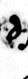
delaA, row 2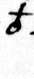
delxaA, row 3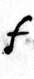
faA, row 1a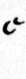
cbB, row 2b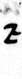
zcC, row 3c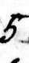
5dD, row 2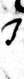
JdD, row 1d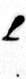
LeE, row 1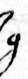
geE, row 3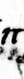
pieE, row 4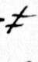
teE, row 2e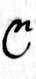
CgG, row 1g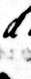
ddhH, row 3h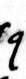
qiI, row 1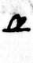
ubiI, row 3i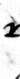
xlL, row 1l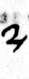
2mM, row 1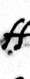
ffmM, row 2m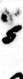
snN, row 1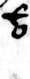
xinN, row 3n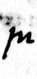
muoO, row 3sloO, row 1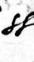
ssoO, row 2o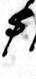
$pP, row 2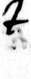
ZbpP, row 1p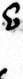
eprR, row 1r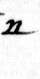
nbsS, row 2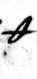
thsS, row 3sgamtT, row 1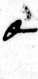
obtT, row 3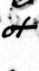
ottT, row 2t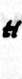
HuV, row 3etauV, row 1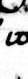
wuV, row 2u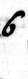
6yY, row 1y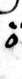
oonullrule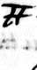
DBLdoublesrule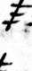
Tdoublesrule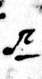
n_leword list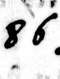
86queword list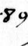
89quilword listIn each box: the sign, our name for it, its value, and its place on the key sheet (column letter and row of the alphabet; "word list" = the list of numbers and underlined letters; "rule" = a note on the sheet). Z and S are z and s written larger. On the sheet the column V serves for u and v.
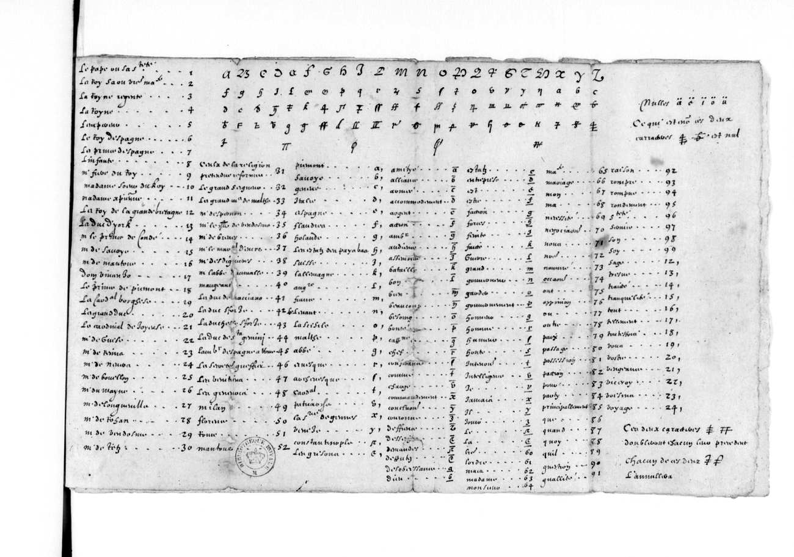
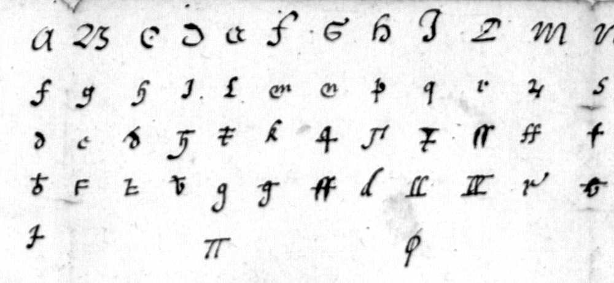
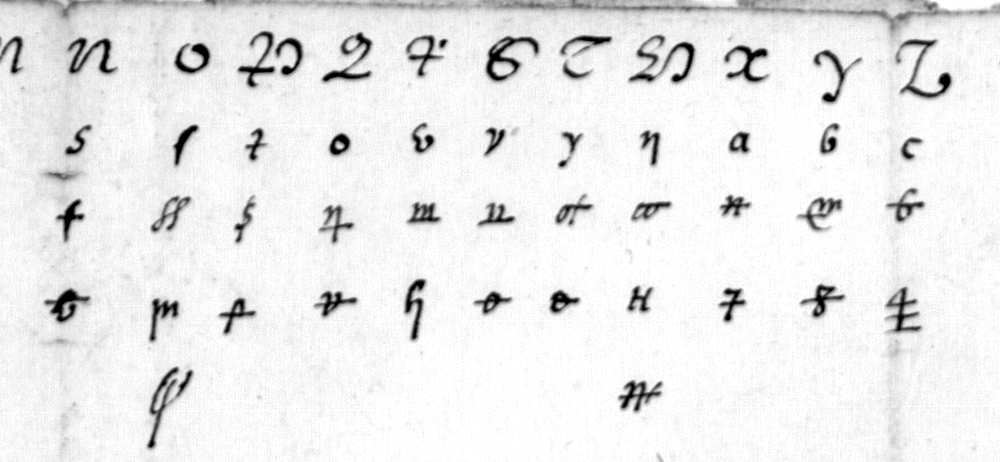
Our transcription of the whole sheet (259 rows, one pass): key_fr18009_f156.tsv. The decoder with the key table: decode.py.
Worked example
The first cipher run fills three lines of f. 317r. Each box holds one sign: its image, our name for it, and its value by the key. The line under a group of boxes gives the word; the word division is ours. Spelling is that of the cipher (u and v are one letter).
Line 1
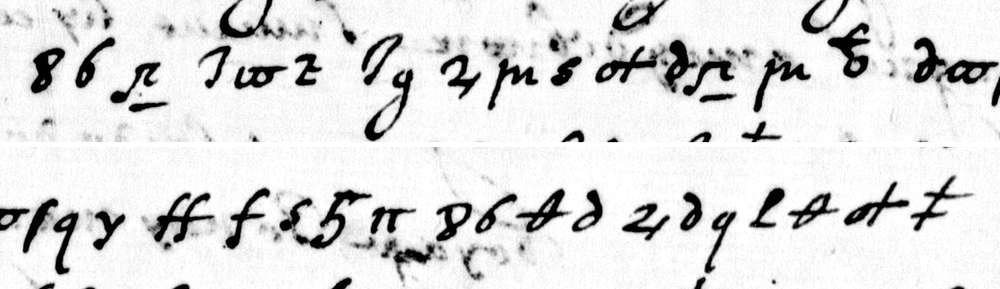
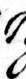
Jdgede2mmuosnottdela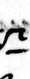
n_le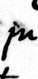
muoxinmontaleon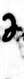
dela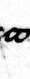
wusloqigamtauoitffmfa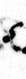
sn5dpiemande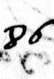
86quequeths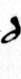
delasa2mdelaqiLethsotttemaiesteLine 2
Line 3
que le duc de Montaleon auoit mande que sa maieste auoit un sy grand desuoyement hault et bas qu'il croyoit qu'elle ne pouuoit passer
that the duke of Monteleone had written that His Majesty had so great a flux upward and downward (vomiting and diarrhoea) that he believed that His Majesty could not last [two hours].
The word "croyoit" runs over the end of line 2. The cipher has "que elle"; the reading file writes "qu'elle". The signs T and DBL double the letter before them: granddesuoyement, pouuuoit, passer.
Line 5
[cest homme est dangereux et mande force choses] a don Pedro
[this man is dangerous and writes many things] to Don Pedro
The two last signs are nulls. "a don pedro" was the crib that opened the cipher.
How sure
| Measure | Value |
|---|---|
| Cipher signs | 189, in nine runs inside clear French |
| Signs identical in the two transcription passes (the second blind) | 179 (94.7 %); no difference changes a word |
| Sign values of the context solution that agree with the key sheet | 43 of 43 |
| Four-letter-group score of the reading | -10.47; 2,000 shuffled keys: mean -15.42, best -13.13 |
Outside check. The key sheet itself. The solution from context came first; all 43 sign values of that solution agree with the sheet, with no conflict. The sheet then corrected five points (the code 89 = "qu'il", the words "hault" and "quant", the sign for "il", and the doubling sign).
What is not resolved
- The clear French around the cipher had one pass only, and some clear words are doubtful ("son frere" among them).
- The first sign of the word read "car" has no exact match on the key sheet.
- Two pairs of signs are close in shape, and the context decides between them.
- Our transcription of the key sheet had one pass.
French text with the cipher passages, and an English translation: reading.md. Folder: cocquet-1616.